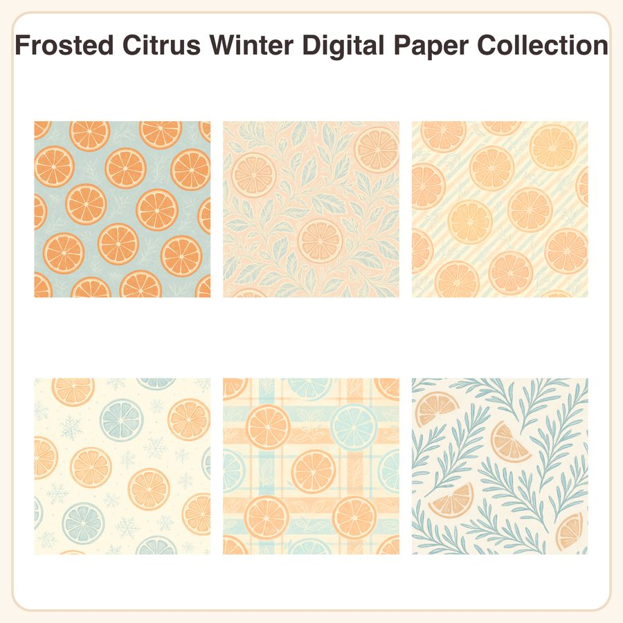

$4.50
View on EtsyA fresh take on winter — bright citrus slices meet frosty pastels instead of the usual pine-and-plaid! 🍊❄️ This Frosted Citrus Winter collection is perfect for planner decorators, card makers, and crafters who want a cheerful, non-traditional holiday palette of blush orange, icy blue, and cream. What's Included: • 6 seamless digital paper patterns • Each pattern as a 3072px x 3072px JPEG (12x12in @ 300dpi, print-ready) • Each pattern also included as a repeatable PNG tile for use in design software • 12 files total Patterns: 1. Orange citrus slices scattered on icy blue background 2. Frosted leaf lace pattern in cream on pale blush 3. Thin candy-cane stripe in blush and icy blue 4. Tiny snowflake dot grid on soft cream 5. Citrus grove plaid in orange and frost blue 6. Botanical rosemary sprigs with citrus wedges on cream Style: soft frosted pastel palette with delicate citrus and frost-etched linework, finished in a flat, cozy folk-art illustration style. How to Use: Great for card making, scrapbooking, planner covers and inserts, gift wrap, junk journals, digital backgrounds, party printables, packaging, and more. Open files in any program that supports JPEG/PNG — Procreate, Photoshop, Canva, Cricut Design Space, etc. PNG tiles can be seamlessly repeated/tiled for custom-sized projects. License: For personal use and small business commercial use (up to 500 finished units). You may not resell, share, or redistribute the digital files themselves in original or altered form. Honest Disclosure: These designs were created by our shop with the help of AI tools, then refined and finalized by hand for pattern repeat and color balance. Instant Download: No physical item will be shipped. Files are available for download immediately after purchase — please check your device's storage before buying, as no refunds can be issued for digital items.